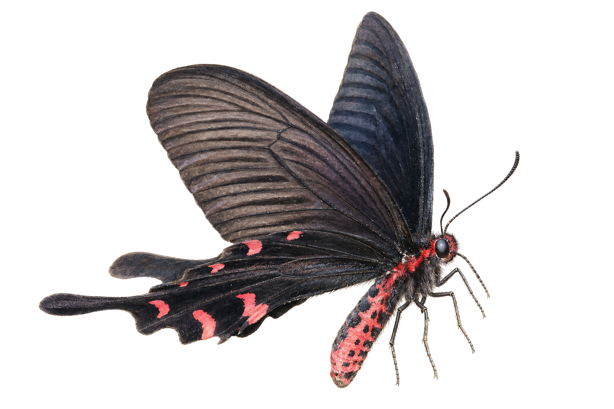

アゲハチョウ科 · 011 / 165
ジャコウアゲハ
Byasa alcinous

特徴・見分け方
細長い黒い翅と長い尾状突起を持ち、腹部の赤色が目立つ。雌は翅が淡く見えることがある。
雌雄の違い
雄の翅は黒く、雌は黄灰色から淡褐色に見えることが多い。地域・個体による変異もある。
大きさ
前翅長 42–60 mm（一般的な目安。沖縄個体群だけの実測範囲ではない）
沖縄の島別記録
伊是名島、伊平屋島、水納島（本部町）、瀬底島、伊江島、古宇利島、大宜味村（宮城島）、屋我地島、奥武島（名護市）、沖縄本島、浜比嘉島、宮城島（うるま市）、伊計島、薮地島、浮原島、津堅島、久高島、渡嘉敷島、座間味島、阿嘉島、慶留間島、外地島、久場島、屋嘉比島、粟国島、渡名喜島、久米島、奥武島（久米島町）、宮古島、池間島、大神島、来間島、伊良部島、下地島、多良間島、石垣島、竹富島、小浜島、黒島、鳩間島、西表島、波照間島、与那国島。 記録島のすべてで同じ頻度とは限らない。
生息環境
ウマノスズクサ類のある林縁や草地。
生態・識別上の補足
属名はByasaとAtrophaneuraの両方が使われる。沖縄本島などの奄美・沖縄亜種と、八重山の個体群は区別して参照する。
幼虫・食草
リュウキュウウマノスズクサ、アリマウマノスズクサなどウマノスズクサ属。成虫の花蜜と幼虫の食草は別。
参照元・参考資料
- 沖縄蝶類生態図鑑：ジャコウアゲハ
資料内の参照日: 2026-11-10 - 形態・大きさの補足資料
資料内の参照日: 2026-11-10
掲載内容は提供データ（2026年11月10日更新）に基づきます。記録島は現在の定着や観察の容易さを保証しません。イラストは参考表現で、同定には実物の形態と参照資料を併せて確認してください。